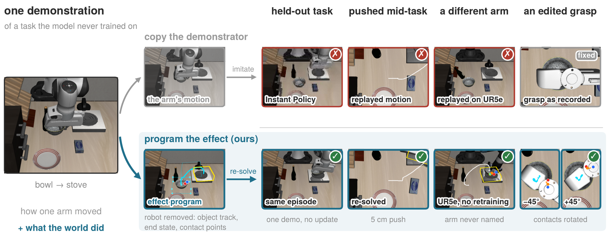
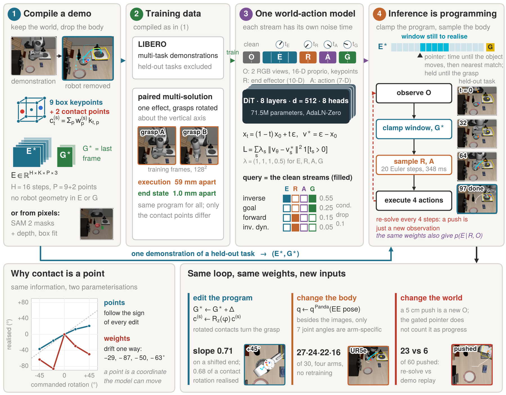
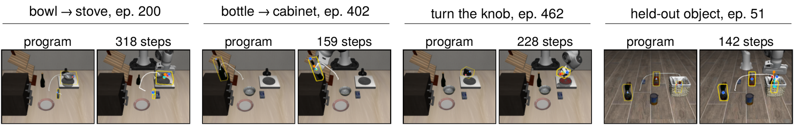
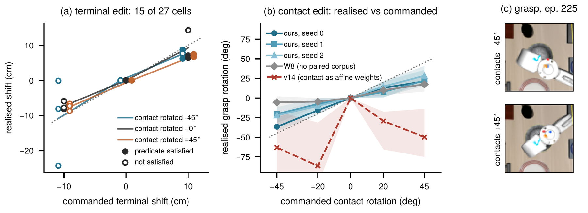
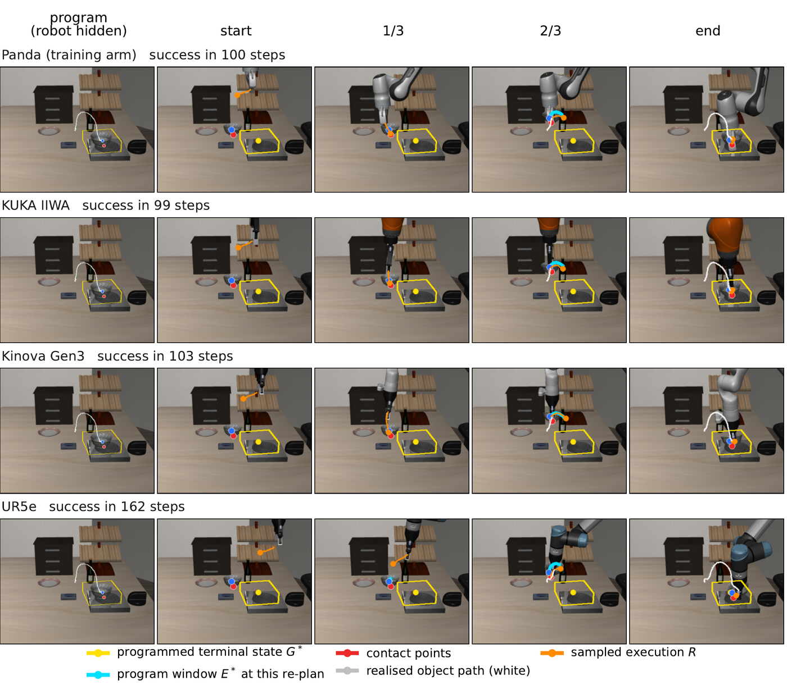
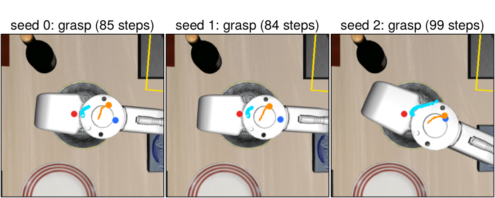
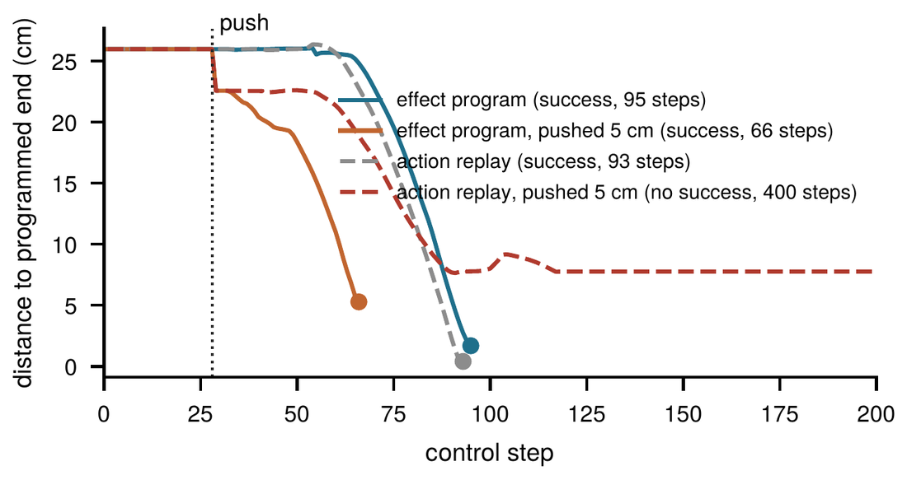
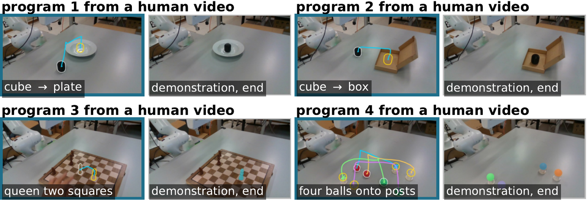
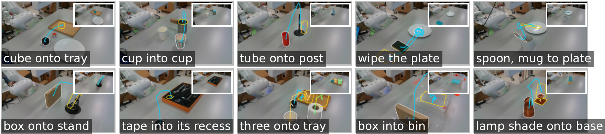

Under review
Programmable Effect-to-Execution
World-Action Models
New York University Abu Dhabi
† corresponding author · jh10472@nyu.edu

A robot demonstration records two things in the same frames: what happened to the objects, and how one particular arm made it happen. We condition on the first. A demonstration is compiled into an effect program: the 3D keypoint trajectories of the objects that moved, two points marking where each was held, and the configuration the scene ends in, with the demonstrator removed. PEWAM, a 71.5M-parameter world-action model, generates effect, robot execution, action and terminal state as four streams with independent flow-matching times, so clamping a program and sampling the execution turns inference into programming, re-solved closed loop from the live scene.
On held-out LIBERO-Goal tasks, one demonstration's program completes 40 of 90 episodes, where the same backbone given a goal image or language, and published demonstration-conditioned methods, complete at most 19; on three of Meta-World's held-out classes it exceeds the best published results, though not on the five-class mean. Because a program is a set of coordinates, a person can edit it: the placement follows a shifted terminal state and the grasp turns with rotated contact points. The same program runs on four robot arms without retraining, and after a push, re-solving completes 23 of 60 episodes where replaying the demonstration completes 6. On a Franka arm, fine-tuned on real demonstrations of other tasks, programs compiled from single human videos complete 36 of 40 trials, against 22 for the same backbone conditioned on the video's last frame as a goal image.
The method, the simulated results, and a real Franka arm programmed by single human videos (3:46, with narration).
Showing a robot what to do is often easier than describing it. A demonstration, however, records two things in the same frames: what happened to the objects, and how one particular arm made it happen. Watch someone put a bowl on a stove and you learn where the bowl should end up, roughly how it travels and where it can be held; you do not learn to bend your elbow the way they bent theirs.
The change in the world is the task, and the demonstrator's motion is one of many ways to produce it. A demonstration is therefore compiled into an effect program: keypoints of each relevant object tracked over time, two contact points recording where the object was held, and the configuration the objects end in. Nothing in the program refers to the robot.
The task is written as object keypoints, contact points and a terminal state, with no robot geometry in it.
Moving the terminal state moves the placement, rotating the contact points turns the grasp, and one program runs on four arms.
Progress through the program counts only effects the robot has caused, so a push becomes a new observation rather than progress.
For each moved object, the effect is the world-frame trajectory of the eight corners and the centre of its oriented box, plus two contact points at the finger-side contact patches at the moment of grasp. Each contact point is a fixed affine combination of the object's keypoints, so it moves rigidly with the object; rotating the contact points asks for another grasp of the same effect. The terminal state is the last frame of the effect. The effect and terminal state contain no robot geometry; the execution and the action describe only the body.
One DiT (8 layers, 71.5M parameters) processes observation, effect, execution, action and terminal-state tokens. Each stream draws its own flow-matching time, and a stream given clean contributes no loss, so the set of clean streams defines a query and one set of weights answers every conditional: inverse (effect and terminal state given, execution and action sampled), goal, forward and inverse dynamics.
Executing a program is the inverse query. The window of the program that a monotone pointer selects is clamped, the execution is sampled in 20 Euler steps (348 ms on one RTX A6000), the first four actions run, and the loop repeats from the new observation. A push moves an object just as a grasp does, so progress past the first programmed motion counts only once the gripper has closed and the object has moved 1 cm with it; before that, the program is re-anchored to where the object is. On another arm, the joint angles are re-expressed as the training arm's joints at the same end-effector pose, and no weights change.

The three held-out LIBERO-Goal tasks contribute no robot data to training. Given one demonstration of such a task, PEWAM completes 40 of 90 episodes from the full program and 49 from its terminal state alone, while the same backbone and data given a goal image, language or no specification complete none. With a bottle, a box and a carton removed from LIBERO-Object training, programs carry over to the removed objects: 67 of 90 from the program and 89 from the terminal state. On shelf-place, sweep-into and bin-picking, three of Meta-World's held-out classes, the program exceeds every published result.
| LIBERO, held-out tasks | success (%) |
|---|---|
| UWM | 21.1 |
| Instant Policy | 5.6 |
| ATM | 0.0 |
| Zero-WAM | 0.0 |
| PEWAM | 44.4 |
| Replay of the demonstration* | 96.7 |
| PEWAM, demonstrator's execution* | 94.4 |
| Meta-World, held-out | shelf | sweep | bin |
|---|---|---|---|
| Meta-World baseline | 0.0 | 24.7 | 0.3 |
| DP3 | 12.7 | 16.7 | 9.3 |
| Mamba Policy | 10.0 | 9.7 | 9.7 |
| FreqPolicy | 7.0 | 15.7 | 11.0 |
| FlowPolicy | 0.0 | 6.7 | 9.0 |
| DAMI | 10.7 | 28.0 | 13.7 |
| PEWAM | 22.2 | 100.0 | 52.2 |
Success rate (%). Left: the three held-out LIBERO-Goal tasks, 90 episodes; each published method reads the same demonstration through its own interface. *Reference rows carry the demonstrator's motion. Right: Meta-World test classes from ML10 (shelf-place, sweep-into) and ML45 (bin-picking); PEWAM is the mean of three trainings, each over 30 episodes programmed by another episode's demonstration; published policies are fine-tuned on ten demonstrations of the class.

Translating the terminal state moves the realised placement with it: over 30 episodes shifted by ±5 and ±10 cm the slope is 0.71. Rotating the two contact points about the object's vertical axis turns the grasp the arm takes, in the commanded direction at every rotation and by 0.68 of it on average; with edited contacts the model completes 22 to 24 of 30 at ±20° and ±45°.

One program runs on the Panda it was trained with and on a KUKA IIWA, a Kinova Gen3 and a UR5e, completing 27, 24, 22 and 16 of 30 bowl episodes with no retraining. Three sampling seeds succeed in 27, 28 and 28 of 30 through grasps a median 20.1° apart, and at least one seed succeeds in all 30. After a 5 cm push mid-task, re-solving the remaining program completes 23 of 60 pushed episodes and replaying the demonstration 6.



A person performs each task once at a table in front of a Franka Research 3 while a calibrated RGB-D camera records. One click per object on the first frame prompts SAM 2, whose masks and depth give each object's keypoints; the arm then executes the program closed loop from the same camera. The model is the simulation checkpoint fine-tuned on 156 real demonstrations of other tasks, none of the four evaluated. Over four tasks PEWAM completes 36 of 40 trials, against 22 for the same backbone conditioned on the video's last frame as a goal image. With the terminal state shifted 10 cm to either side the arm completes 9 and 9 of 10, and after a 5 cm push 7 of 10.
| Task (successes of 10) | Goal image | PEWAM |
|---|---|---|
| Cube to plate | 8 | 10 |
| Cube into box | 5 | 10 |
| Cube onto tray | 5 | 8 |
| Box into bin | 4 | 8 |
| Total (of 40) | 22 | 36 |


A model trained on the nine affine weights that define the contact points, the same information, reads every commanded rotation with a negative sign: contact has to be written as points, not weights. Without the paired corpus of several executions per effect, the model follows contact edits less closely.
| Changed | Measure | PEWAM | Variant |
|---|---|---|---|
| No contact channel | four arms, bowl / bottle | 89 / 43 | 64 / 10 |
| No paired corpus | contact following | 0.68 | 0.31 |
| Demo-clock pointer | held-out bottle / Σ | 12 / 40 | 1 / 27 |
| Native proprioception | four arms, bowl | 89 | 28 |
| Relative effect | held-out Σ | 40 | 1 |
@article{hu2026pewam,
title = {Keep the Effect, Drop the Actor: Programmable Effect-to-Execution World-Action Models},
author = {Hu, Junyi and He, Zhewen and Fang, Yi},
journal = {arXiv preprint},
year = {2026}
}